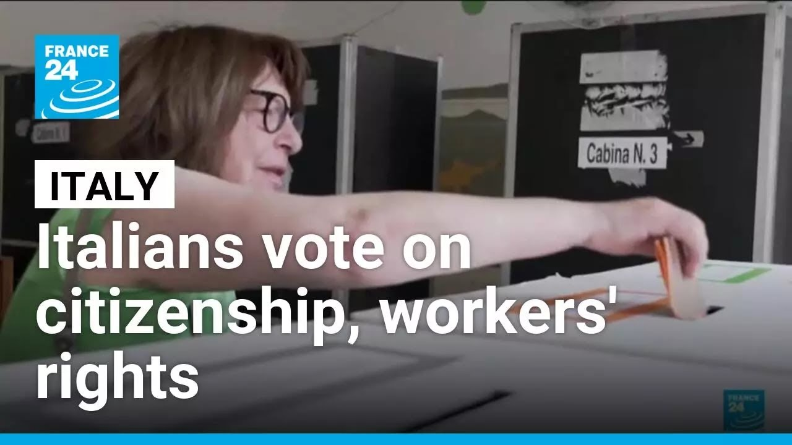

【意大利举行全民公投：是否将申请公民身份的居住年限从10年缩短为5年】
Summary: In Italy, a national referendum can be triggered by a petition with at least 500,000 signatures, as was the case with Sunday’s vote. The referendum proposes making it easier to obtain Italian citizenship by reducing the required residency period from 10 to 5 years. This change could benefit many, especially immigrants who face long, uncertain paths to citizenship. The government coalition, which opposes the proposal and supports stricter immigration controls, has urged its supporters to boycott the vote to keep turnout below the threshold needed for the referendum to be valid. A young Egyptian man shared how the lack of citizenship has separated him from his family and limited his opportunities. Around 10% of Italy’s population are foreign residents, many facing poor working conditions and unstable lives. The focus now is on voter turnout, as participation—regardless of vote choice—is key to enacting change.
摘要： 在意大利，至少50万人签名即可推动全民公投。本次公投提议将申请公民身份的居住年限从10年缩短为5年，使更多外国居民受益。执政联盟反对此举，呼吁抵制投票以降低投票率使其无效。一位埃及青年表示，缺乏公民身份使他无法回国团聚，限制了他实现梦想的机会。约10%的意大利居民为外国人，常面临恶劣的工作和生活条件。现在的关键在于投票率，无论投赞成还是反对票，参与本身就是对权利的行使。

⏱️ Estimated Reading Time: 2 min
📚 六级生词 📚 雅思生词 📚 托福生词 📚 GRE生词 📚 视频里的生词
Maybe one way to have a referendum in Italy is to organize a petition.
在意大利举行全民公投的一种方式可能是组织请愿活动。
If at least 500,000 people sign it, the vote can take place.
如果至少有50万人签名，就可以进行投票。
That's what happened with Sunday's referendum.
这就是周日公投的情况。
The issues mainly an initiative that could make it easier to get the Italian citizenship seemed so important to many that the petition got enough votes.
主要议题是一项可能使获得意大利公民身份更容易的倡议，对许多人来说似乎非常重要，因此请愿获得了足够的票数。
Now, for the referendum to be validated, more than half of Italy's voters have to cast a ballot.
现在，为了使公投生效，超过一半的意大利选民必须投票。
That's why everyone's focus was on the turnout.
这就是为什么所有人的注意力都集中在投票率上。
I am hoping that many people will show up at this referendum.
我希望很多人会参加这次公投。
What whether they want to vote yes or no doesn't uh matter.
无论他们想投赞成票还是反对票都不重要。
What matters is that they show up and they take advantage of their right and privilege.
重要的是他们出现并行使自己的权利和特权。
The ruling coalition, which wants to limit immigration and therefore is opposed to the referendum, has called on its supporters to boycott the vote.
执政联盟希望限制移民，因此反对公投，并呼吁其支持者抵制投票。
Today, before being able to even ask for the Italian citizenship, foreigners have to live in the country for at least 10 consecutive years.
目前，在申请意大利公民身份之前，外国人必须在该国连续居住至少10年。
The process can then last several years.
这一过程可能持续数年。
The referendum suggests cutting that time in half like neighboring France.
公投建议将这一时间减半，像邻国法国一样。
I'm an almost 26-year-old Egyptian boy who left his home at 14, leaving his family, all of his affections, also my parents and my brother.
我是一个快26岁的埃及男孩，14岁离开家，离开了家人、所有的情感，还有我的父母和兄弟。
Not having citizenship, unfortunately, prevents me from returning to my home without risking my life.
没有公民身份，不幸的是，我无法在不冒生命危险的情况下回家。
It also does not allow me to fulfill my dreams.
这也让我无法实现梦想。
Getting the Italian citizenship allows people to work and travel far more easily and to vote.
获得意大利公民身份可以让人们更容易工作和旅行，并参与投票。
Roughly 10% of Italy's residents are foreign and this leads to poor working conditions and to precarious.
大约10%的意大利居民是外国人，这导致了恶劣的工作条件和不稳定的生活。